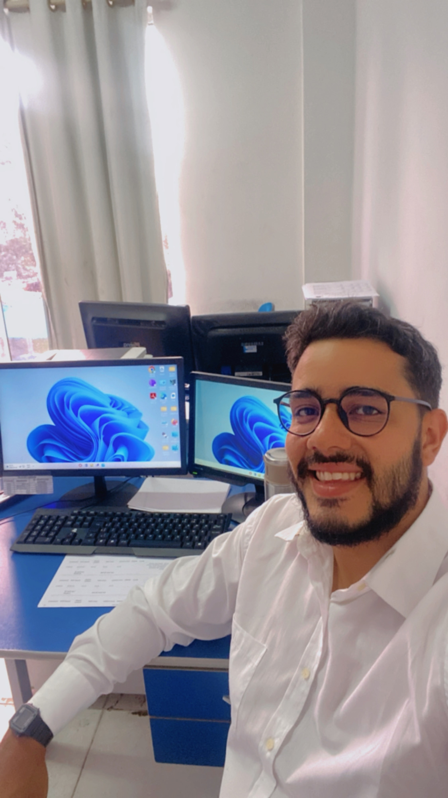

Os Primeiros Passos na Engenharia de Software
Quem sou eu
• Me chamo Matheus Emmanuel Maciel Pontes, tenho 28 anos de idade, sou Paraibano de Campina Grande, porém hoje resido e trabalho em Ipueiras-CE, atualmente sou auxiliar administrativo do setor de compras da prefeitura, ja na minha vida acadêmica cursei Ciências Aeronáuticas e atualmente curso Investigação Forense e Perícia Criminal e o meu tão sonhado e aclamado curso de Engenharia de Software. Sou apaixonado por carros, motos, aviões, computadores e cachorros, mas vamos voltar ao mundo dos computadores, a seguir vou contar um pouco da minha trajetoria ✌️
Passos iniciais...
• A Engenharia de Software é a disciplina que envolve o design, desenvolvimento, teste e manutenção de software. Ela abrange princípios e práticas para criar sistemas de software eficientes, confiáveis e escaláveis. Engenheiros de software utilizam diversas metodologias, ferramentas e linguagens de programação para solucionar problemas e atender às necessidades dos usuários. O campo também se preocupa com a gestão de projetos, qualidade do software e a colaboração em equipe. Sua aplicação é vasta, englobando desde aplicativos móveis até sistemas corporativos complexos.
• Vou falar um pouco de como acabei entrando na Engenharia de software não foi minha primeira escolha, porém durante meus 7 anos na aviação utilizei muitos os simuladores de voo e foi com eles que aprendi um pouco sobre programação, pois era necessário se ter um leve entedimento do assunto para configurar corretamente o simulador e suas aeronaves. Por fim em 2022 acabei entrando no curso de engenharia de software na faculdade Estácio, pois computação sempre foi minha segunda escolha de profissão, hoje me encontro no terceiro periodo e estou muito feliz com o curso e com a escolha a qual eu fiz.
Vai ai uma foto eu programando este belo site pela primeira vez e aprendendo junto com vocês HAHAHA ❤️️

Quais cursos indico para Engenharia de Software
• Coursera
Software Engineering Specialization (University of Alberta): Um curso abrangente que cobre os fundamentos e práticas avançadas da engenharia de software.
Software Development Lifecycle (University of Minnesota): Foca no ciclo de vida do desenvolvimento de software e as melhores práticas.
• Universidade Federal de Pernambuco (UFPE)
Bacharelado em Engenharia de Software: Conhecida pela excelência em tecnologia e computação.
• Universidade de São Paulo (USP)
Bacharelado em Engenharia de Software: Oferece uma formação completa e profunda na área.
A área que hoje mais amo na Engenharia de Software
• Amo a área de HTML e CSS na engenharia de software porque me permite transformar ideias em realidades visuais incríveis. Com HTML, posso estruturar o conteúdo de uma página de forma lógica e organizada. Já o CSS me dá o poder de estilizar e dar vida a essas estruturas, criando interfaces bonitas e funcionais. Adoro ver as mudanças que faço ganharem vida instantaneamente no navegador. É uma combinação perfeita de criatividade e tecnologia!
Um pouco sobre meu setup
• Meu setup hoje é uma combinação de tecnologia clássica e moderna. Ainda uso meu MacBook Pro mid 2009 com um Core 2 Duo para tarefas leves e por nostalgia. Apesar de ser um veterano, ele ainda dá conta do recado para navegação e escrita. No entanto, para trabalho pesado e desenvolvimento, tenho um desktop robusto com um processador AMD Ryzen 5600 e uma placa de vídeo GTX 960 SSC. Essa máquina é minha central de produtividade, oferecendo desempenho excelente para programação, design e até um pouco de jogos nas horas vagas. Essa diversidade no setup cobre todas as minhas necessidades, do básico ao avançado.
Porque indico a Engenharia de Software
Engenharia de Software é, sem dúvida, a profissão do futuro. Vivemos em um mundo cada vez mais digital, onde a tecnologia está no centro de praticamente tudo o que fazemos. Desde aplicativos que usamos diariamente até sistemas complexos que operam grandes empresas, os engenheiros de software são os criadores por trás dessas inovações.
1.Alta Demanda: A demanda por engenheiros de software está crescendo exponencialmente, e a tendência é que continue assim. As empresas de todos os setores precisam de profissionais qualificados para desenvolver, manter e inovar suas plataformas tecnológicas.
2.Oportunidades Diversificadas: A Engenharia de Software oferece uma ampla gama de oportunidades de carreira. Seja no desenvolvimento web, inteligência artificial, ciência de dados, cibersegurança ou aplicativos móveis, há um lugar para cada interesse e especialização.
3.Impacto Global: Como engenheiro de software, você tem o poder de criar soluções que podem melhorar a vida de milhões de pessoas ao redor do mundo. É uma profissão que combina criatividade, lógica e impacto social.
4.Flexibilidade e Remuneração: Além das excelentes perspectivas de emprego, a Engenharia de Software oferece flexibilidade de trabalho, muitas vezes permitindo trabalho remoto e horários flexíveis. A remuneração também é competitiva, refletindo a alta demanda por esses profissionais.
5.Aprendizado Contínuo: A tecnologia está em constante evolução, o que significa que você nunca para de aprender. Para aqueles que amam desafios e crescimento constante, a Engenharia de Software é um campo excitante e dinâmico.
Considerações Finais
• Indico a Engenharia de Software porque é uma carreira repleta de possibilidades, desafios e recompensas. Se você gosta de resolver problemas, criar coisas novas e tem uma paixão por tecnologia, essa é a profissão perfeita para você. É uma área que não só promete um futuro brilhante, mas também oferece a chance de ser um agente de mudança no mundo moderno.
No mais irei deixar meu linkedin para maiores informações !
• LinkedIn